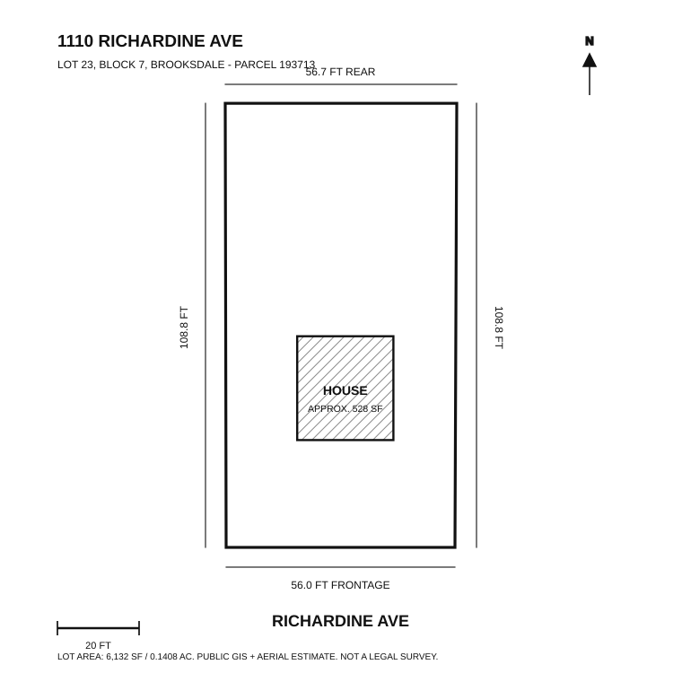

Spring 2026
Plan rooms, save ideas, compare renderings.
A practical workspace for home projects: current photos, AI rendering prompts, budgets, materials, and next steps all organized by room.
Rooms
Room board
Use each room as a container for photos, measurements, projects, prompts, and decisions.
Start by dropping real photos into assets/uploads/.
Execution
This week
Keep the next few actions small enough to finish. Move completed work into project notes and replace it with the next blocker.
Visuals
Rendering queue
Keep every generated concept tied to a real room, source photo, and decision. Save finished
options in assets/renderings/.
Lot
1110 Richardine Avenue
Top-down planning diagram based on public parcel data and satellite imagery research.
Keep reference images in assets/references/property/.

Projects
Next work
Cards are loaded from src/data/projects.js, so you can add more projects without
editing the layout.
Budget
Budget
Keep estimates visible before buying supplies, booking work, or generating a design direction that depends on pricier materials.
Timeline
Timeline
Materials